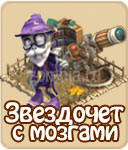

Получено: файл; исходный URL. Первая иллюстрация карточки каталога; подписи изображений источника могут содержать ошибки. Авторство и идентичность при замене домена не подтверждены. Страница: источник.
Звездочет с мозгами
браузерная версия; платформа и дата редакции не установлены- Тип
- Зомби
- Версия и дата
- браузерная версия; платформа и дата редакции не установлены
Данные по источнику · браузерная версия; платформа не указана · дата редакции не установлена
Предварительно: Содержимое списка: изображения и колонки могут терять смысл при извлечении текста; отдельная страница и дата не проверены. Подписи alt иногда ошибочны.. Требуется сверка.
- Текст карточки из каталога
- Описание зомби: Особенности: Виды добываемых ресурсов: Нельзя купить Требуется мозгов: 0 Время работы: 1 часа Доступен: с 15 уровня Его можно найти на футбольном острове Бразилия. Звездочет с мозгами работает быстрее обычного звездочета и не требует мозгов для работы. Лучи добра Школьная коллекция Вкусная коллекция Любовная коллекция Райская коллекция Временная коллекция Гипер-коллекция Коллекция Майа Секретная коллекция Морская Коллекция Пляжная коллекция Зимняя коллекция Президентская коллекция Адская Коллекция Редкая коллекция Столовая коллекция Строительная коллекция Коллекция Знаков Байкерская коллекция Туристическая коллекция Домашняя коллекция Коллекция Цветов Весенняя коллекция
Данные по источнику · историческая браузерная версия, платформа не указана · 26.07.2014 — дата публикации; редакция неизвестна
Предварительно: Данные и подписи пиктограмм исторической фанатской страницы; возможно заимствование с zombi-ferma.ru. Состав добычи и условия могут отличаться в разных версиях и периодах.. Требуется сверка.
- Параметры из статьи
- Доступен с 15 уровня; купить нельзя, продажа 350 000 монет; мозги для работы не требуются; цикл 90 минут.
- Место получения
- Автор пишет, что его можно найти только на одном острове, но название на странице представлено изображением без подписи; название острова не установлено. Слово «только» не считать универсальным правилом.
- Возможная добыча
- Опыт, монеты, Байкерская, Знаков, Туристическая, Школьная, Президентская, Зимняя, Райская, Вкусная, Секретная, Гипер, Адская, Майя, Любовная, Тинейджерская, Компа и Временная коллекции, а также Лучи добра перечислены подписью или ссылками. Добыча приносится в мешках; вероятности не указаны.


Связанные сущности
нет проверенных связей — требуется сверка.